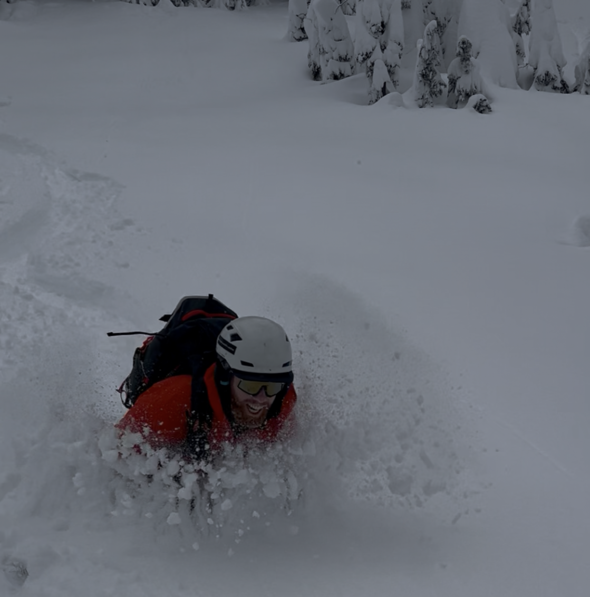
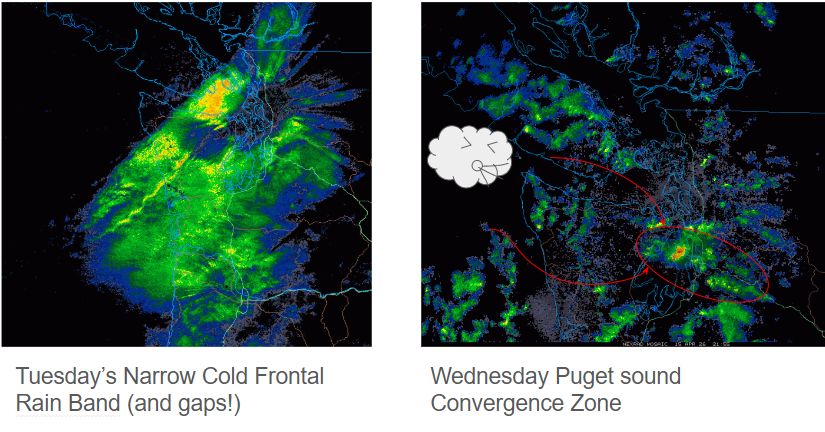
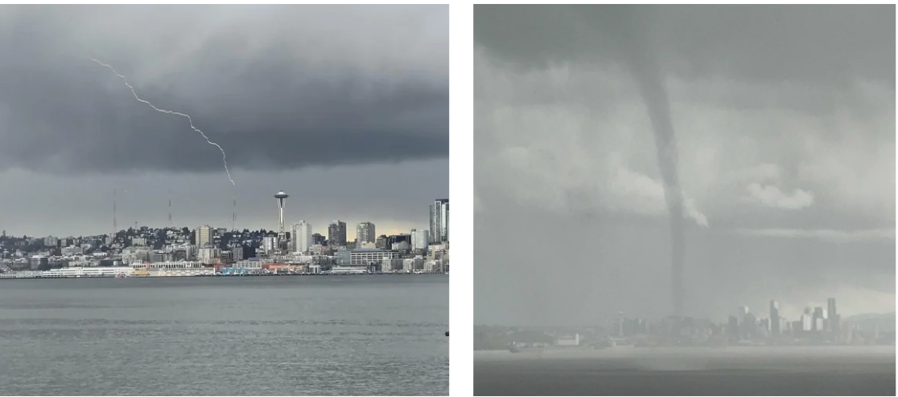
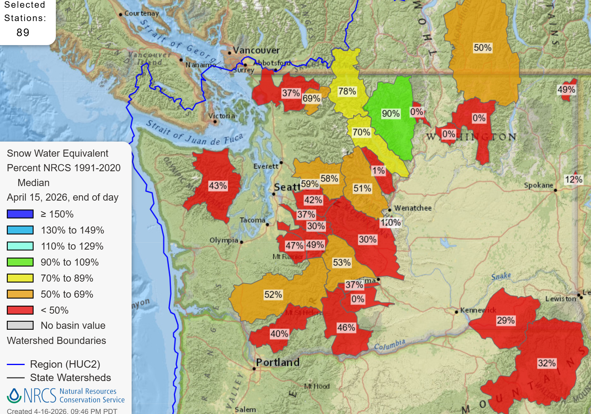
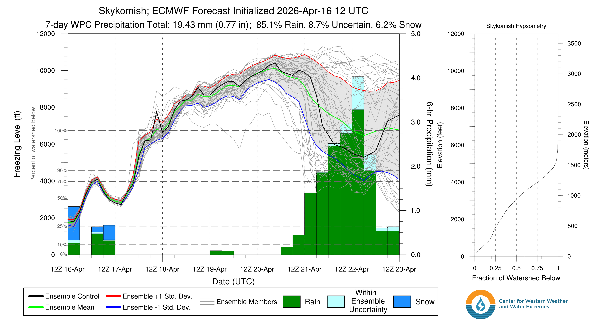
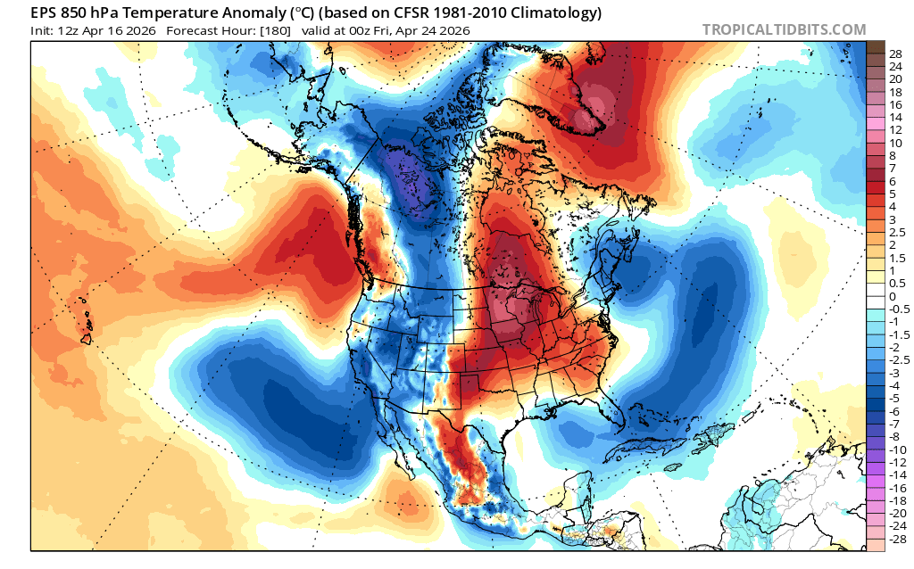
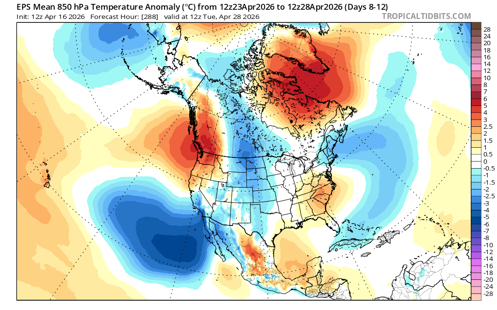

🎃 Trick or Treat: An Overproducing Springtime System Brought a Winter-like Treat, but the April Death Laser Looms Large ☀️
Welcome to The Dendritic Growth Zone!
Past Week's Recap
Springtime weather in the PNW can be classified as Jekkll and Hyde. One day it can be 60 degrees and sunny in the mountains
and two days later there can be hip deep powder (like this week!). Not only did we see this wild variability, but us weather
nerds were treated to a wide array of interesting weather phenomena to keep us entertained while the mountains built up new snow.
   
The fun started as a strong Pacific storm system swepped through western Washington on Tuesday. With it came plenty of wet and windy weather.
and moderate freezing levels in the 3500-4000 ft range. The cold front passed late Tuesday night accompanied by an increase in precipitation rates
and a significant drop in temperature. The front was driven by the deep upper-level low overhead which began to dig southeastward
across the state on Wednesday. Ahead of the front, strong southerly winds hit the coastal areas and high elevations with significant gusts upwards
of 40 mph measured throughout the region. By Wednesday morning, the cold front had passed through the region, 12-20 inches of snow
had fallen in many mountain locations, and then the real fun began.
With the deep upper low overhead and plenty of cold air aloft, the ingredients were in place to kick of quite the convective show.
The NWS Seattle office noted that this was one of the most active convergence zone set ups we have seen all year. It favored locations
primarily in King and Kitsap counties, which lined up for dumping another round of heavy snowfall along the I-90 corridor. In the lowlands,
200-600 J/kg of CAPE (Convective Available Potential Energy, see Clinton's blog from last week for more info) was observed,
which promoted plenty of thunder, significant bouts of hail, and even a waterspout in the Puget Sound!
By Thurday morning, things had calmed down a bit, but wrap around moisture from the departing system and residual instability allowed scattered showers and cool temperatures,
although the sun did make several appearances.
While this significant storm event brought another solid refresh, it is just extending the life of a dying snowpack for a few extra days.
🧙♂️ Forecast Discussion
Short-term (Friday-Sunday)
It was fun while it lasted, but we will be starting a warming trend over the weekend as a weak ridge builds overhead
as an upper-level low descends from the Gulf of Alaska and parks off the CA/OR coast on Sunday.

There is some good news and bad news with this warm up, but mostly bad. The good news is that there will be some cloud cover present
to preserve some of the snow that was hidden from the sun after Wednesday. The bad news is that this cloud cover
is accompanied by warming temperatures, which won't promote this snow preservation.
Under clear nighttime skies, the snow can lose a lot of energy because there isn't much energy coming in from the atmosphere above to balance it
This allows it to maintain or gain "cold content", which is the amount of energy the snow has to gain before it becomes isothermal and can start melting.
However, clouds are a really good emitter of energy (even if they are cold) and thus they can better balance the snow energy losses, so the
snow cannot cool down as much. In other words, when its warm, clouds are bad. Nevertheless, this situtation will not support the buildup
of strong valley inversions, so you won't have to worry about bringing tons of extra layers.

Medium-Term (Monday-Wednesday)

Sunday's system will continue its southward crawl early into the weekwhile we sit in a split flow pattern with ridges to our east and west and troughs to our north and south. This will keep things mild until the trough pushes its way east. This could bring another round of precipitation coming from the south with a weird north-south temperature gradient very similar to what we saw this past Monday! See the gif in last week's forecast to compare with the image above. With cooler air coming in from the south, we could see a bit of convection again, but without the cold shortwave to support it, so don't expect much of anything from this. Although some models are hinting at a small potential for a weak shortwave to come reinforce this cold air from the south, but I wouldn't put too much stock in that, more of just pointing it out as an unlikely possibility.
After that, things get a little more uncertain with highly variable temperature outlooks and disagreement in precipitation totals.🧙🔮🧙♂️ Reading the crystal ball - 7+ day outlook
We don't see too many signs for any significant storms in this outlook. Conditions will likely turn into classic springtime weather with a mix of sun and clouds with mild temerature, but not much in the way of significant precipitation. Nothing as exciting as this week.

❄️ Snowfall
Weekend Snow Accumulation Forecast
| Site | Through 4am Saturday | Through 4am Sunday | Weekend Snow Accumulation (4pm Thursday through 4am Monday 13 Apr) |
|---|---|---|---|
| Mt. Baker (4500') | 0-1" | 0-0" | 0-1" |
| Washington Pass | 0" | 0" | 0" |
| Stevens Pass (4500') | 0-1" | 0" | 0-1" |
| Hurricane Ridge | 0-1" | 0" | 0-1" |
| Blewett Pass | 0" | 0" | 0" |
| Snoqualmie Pass | 0" | 0" | 0" |
| Crystal (5000') | 0" | 0" | 0" |
| Paradise | 0" | 0-1" | 0-3" |
| White Pass (5000') | 0" | 0" | 0" |
🧊 Freezing Level
- Friday: 3000 - 5000 feet
- Saturday: 5000 - 7000 feet
- Sunday: 6000 - 8000 feet (cooling further south)
🎿 Our Recommendations
Best Choice This Weekend: High, steeper north slopes that have seen no sun
I mentioned the death laser in the title. This is the springtime sun. It is powerful and will quickly degrade any any new snow and turn it into gloppy, thick, cohesive snow that is less fun, more difficult (and often more dangerous) to ski. Use your backcountry mapping skills and solar aspect tools on apps like CalTopo to identify sheltered slopes. The snow should retain some of its stellar qualities that we evaluated earlier in the week :).
Runner-Up: Exploration 🧭
With a few days for the new snow to settle and improved coverage from the last storm, this weekend could be a good opportunity to explore something new before the season ends. We just can't guarantee easy travel or good skiing conditions, but if you go in without expectiations, you'll never be disappointed with some nice mountain time.
🚧👷Cascade Mountain Weather Updates👷🚧!
Patches are in! CMW hats will be on sale soon but in limited supply. Reach out if you're interested. We'll be selling them for $25.